※這篇文章是用AI（Chat GPT 5Thinking）製作，再由我部分補寫😁
2024年12月吃的😆這次來到南城市佐敷新開的「豬腳之泰介」。
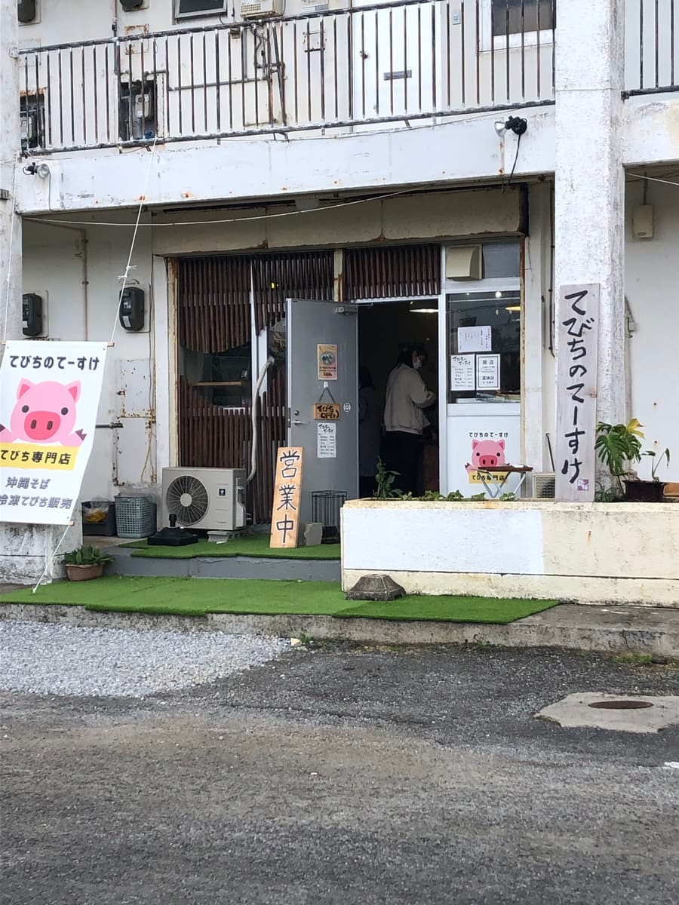
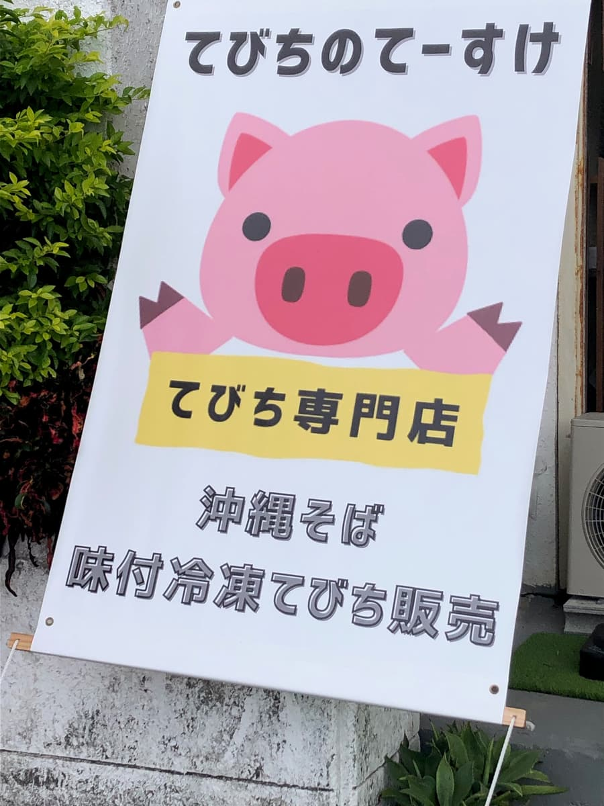
在歷史悠久的建築一角，手寫的「營業中」牌子，還有悠哉小豬的看板大大地迎接著你呢。如照片所示，大大地寫著「豬腳專賣店」，店門口鋪著人工草皮，有點像隱密小屋的氣氛很棒🐷
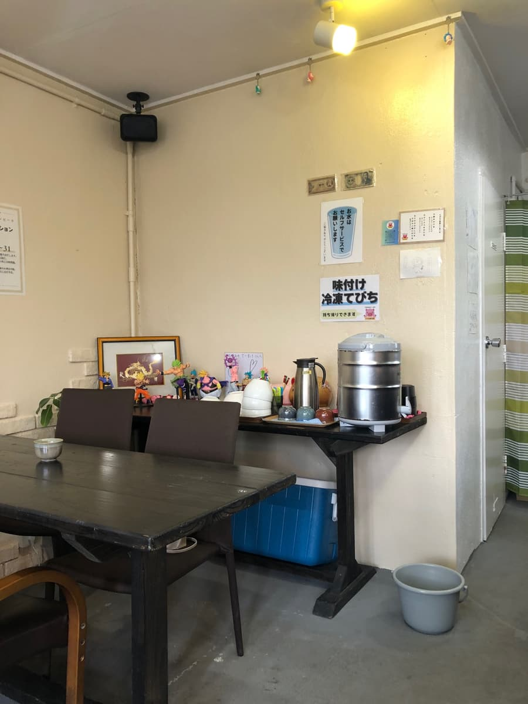
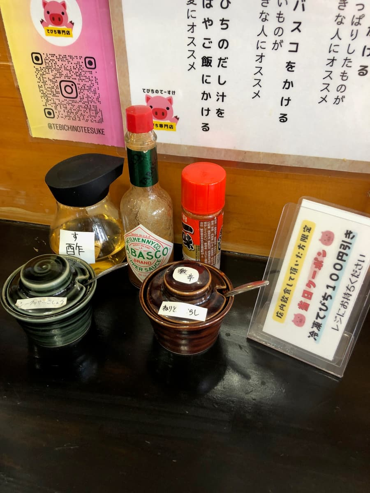
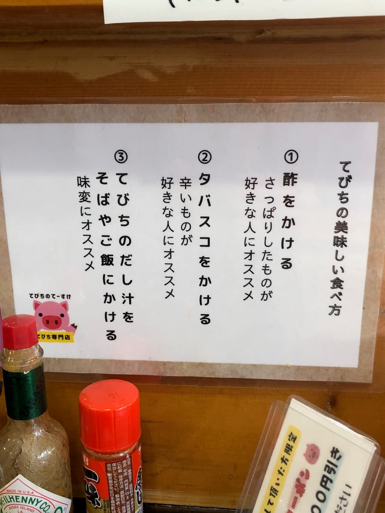
店內櫃檯座位和桌位緊湊地排列，不經意地裝飾著公仔，有種讓人放鬆的家庭感。
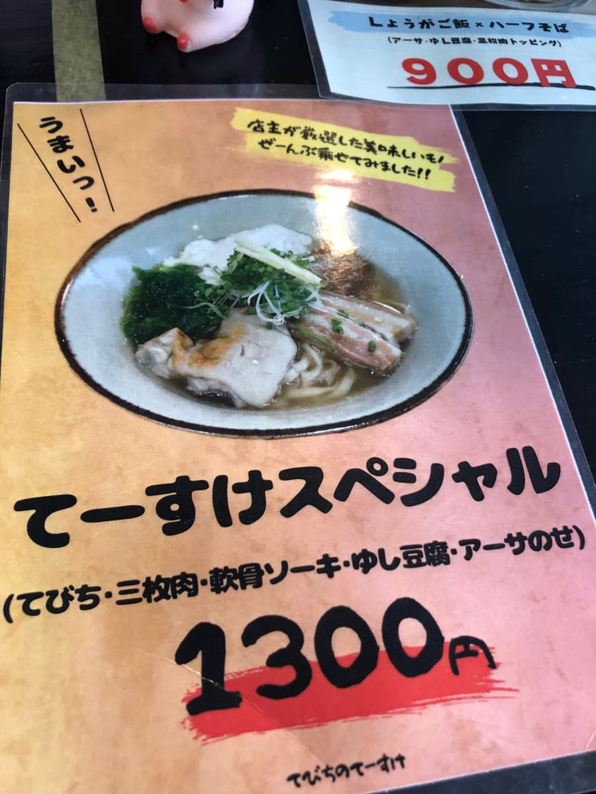
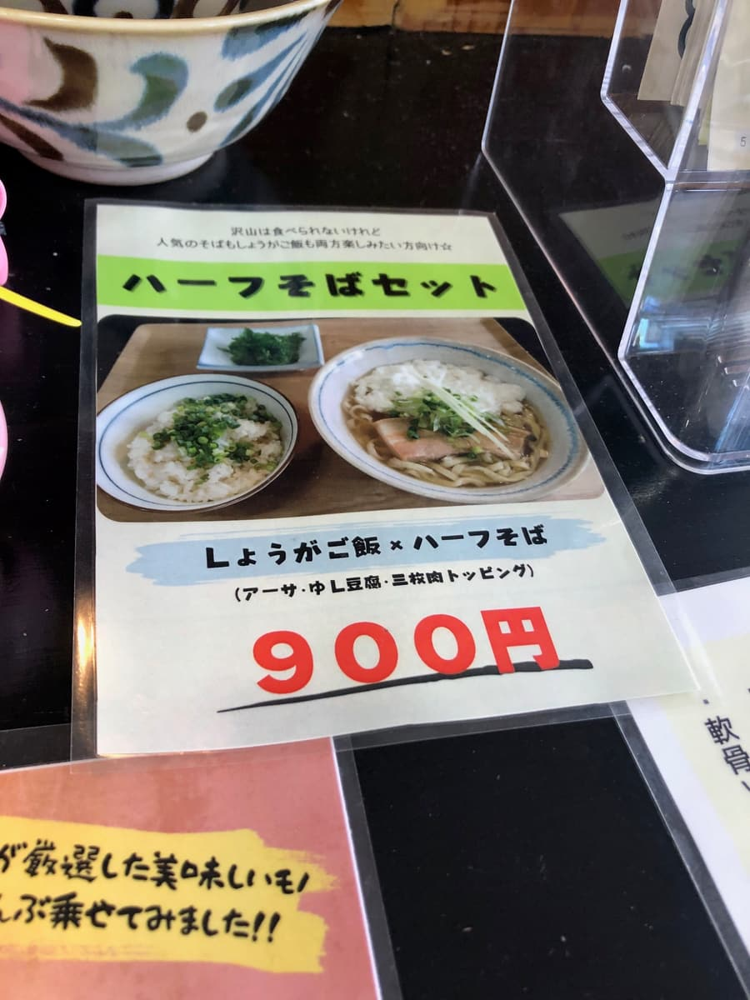
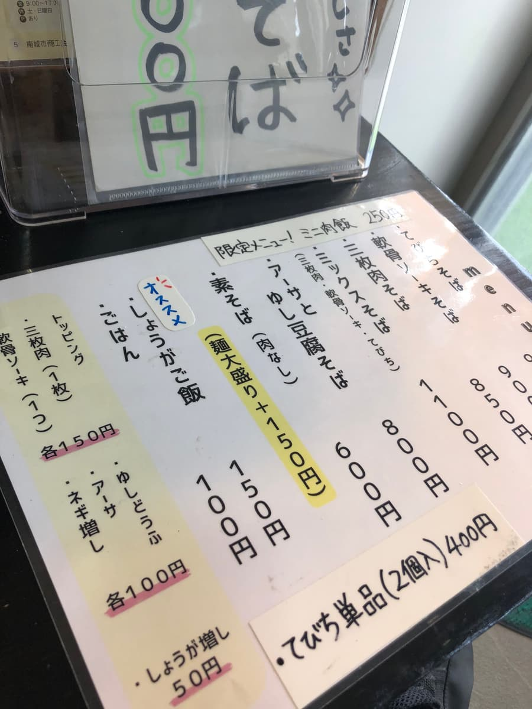
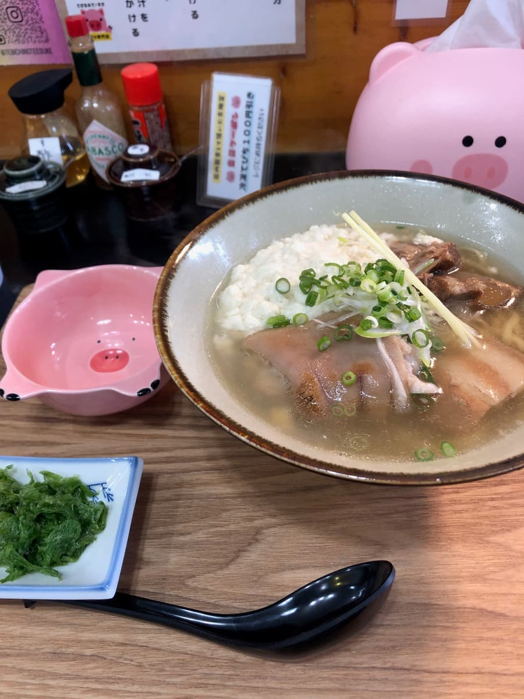
從菜單上毫不猶豫地點了「泰介特製」。帶著「全部配料」的氣勢，豬腳、三層肉、軟骨排骨、沖繩嫩豆腐和石蓴，沖繩的美味之處全都緊緊聚集在一碗裡呢。混合高湯的柴魚味稍微明顯一些，能感受到鹹味。
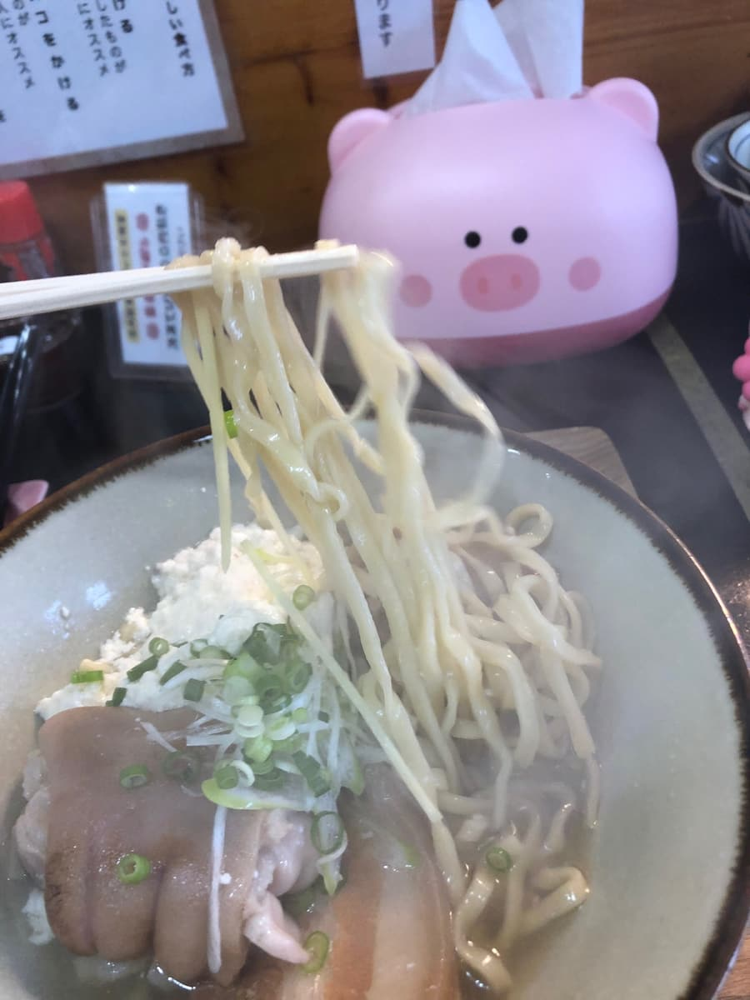
麵條是中細的生麵，略帶捲曲。很Q彈呢🍜
主角豬腳超級Q彈。皮的部分入口即化，膠原蛋白層每次散開，甜味就擴散開來。調味相當節制，如同桌上「建議淋醋」的說明，淋上一點立刻變得清爽俐落。三層肉偏清爽。有一點筋感（口感偏韌）。軟骨排骨連骨頭都軟嫩Q彈。
配料的沖繩嫩豆腐柔軟溫和，吸飽高湯後甜味又更加膨脹。石蓴的綠色帶來海潮的香氣，讓碗中的景色更添沖繩風情也很棒。調味料的白髮蔥絲和針薑把輪廓整理得俐落分明，感覺從頭到尾是設計成以「輕盈的豬腳麵」一路跑完。桌上沒有島辣椒泡盛，取而代之放的是島檸檬胡椒，這個又特別搭。柑橘的清爽讓湯頭的鹹味和柴魚香氣微微提升，讓後味乾淨俐落地收尾。到了後半段，稍微溶入一些辣椒膏，辣味漸漸帶來的熱度讓額頭冒汗。但高湯的輪廓並不會崩壞，讓人舒服地喝到最後。吃完的時候，身體由內而外暖和起來🔥
牆上也貼著「豬腳的美味吃法」告示，從醋、塔巴斯科辣醬到做成高湯泡飯的變化吃法都細心指導，很有意思呢。
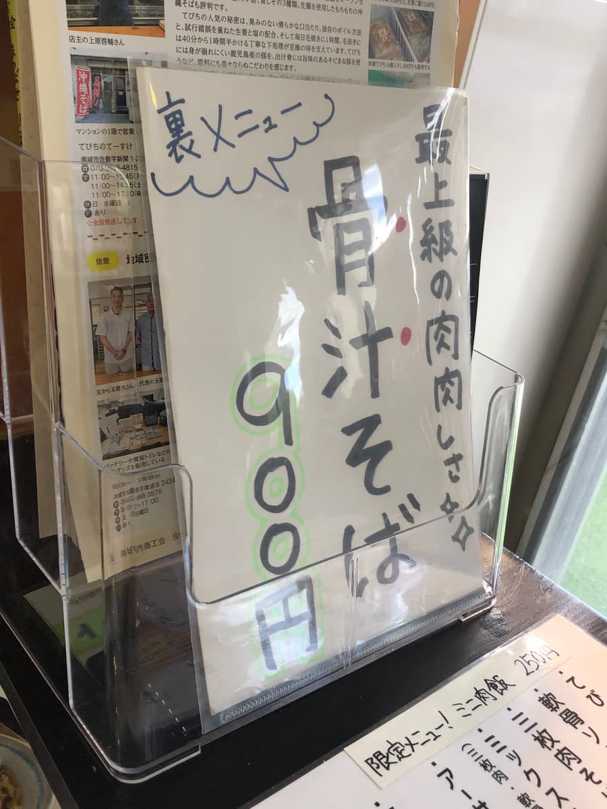
收銀台旁也隱約可見「骨湯麵」的介紹。心想下次也要來挑戰那個。販賣區除了調味冷凍豬腳之外，居然還有賣馬肉生魚片。是讓人想帶回家當作在家小酌下酒菜的誘人品項，差點就要不由自主地鬆開荷包呢。我覺得受歡迎的原因不只是一碗麵，也在於這種營造「樂趣餘裕」的方式😊
評分（9分/15分）：總的來說，是不譁眾取寵、用「普通好吃」來形容再貼切不過的、讓人安心的一碗呢。以好的意義打破「豬腳＝油膩」的印象，輕盈到飯後不會有沉重感，讓我很開心✌️
來南城市的時候，要不要來吃一次看看呢。
麵：★★★☆☆（3）
湯頭：★★★☆☆（3）
配料：★★★☆☆（3）